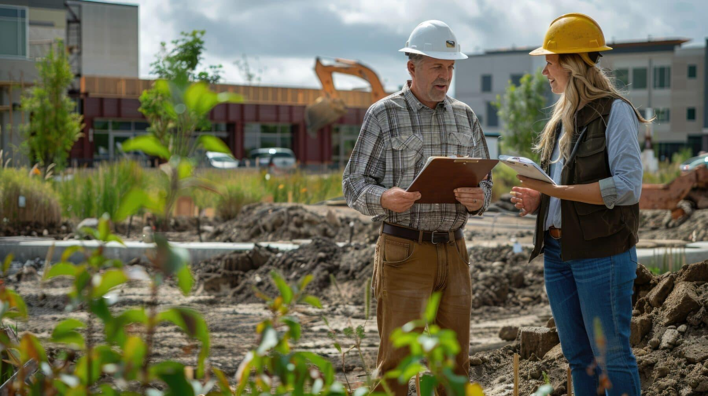
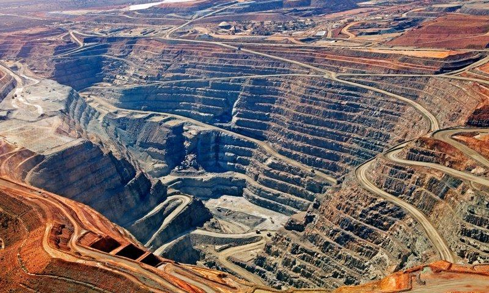
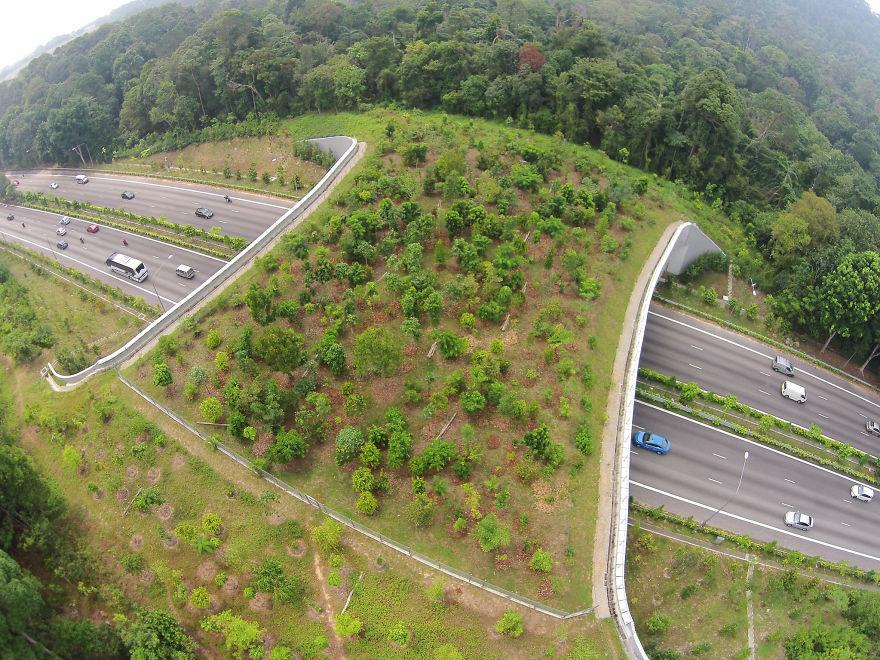
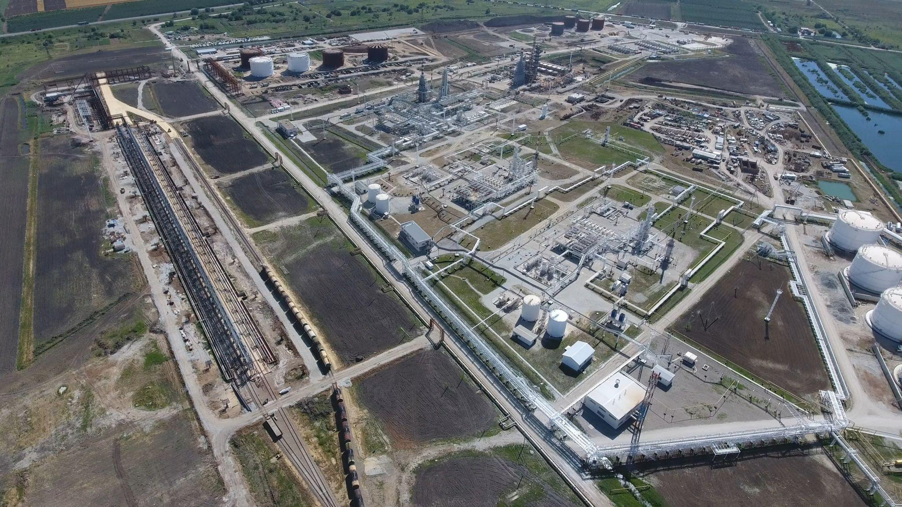

Expertise Across Key Verticals
We configure our scientific testing and environmental mitigation strategies to suit the regulations and logistics of each sector.
High-density urban expansion and commercial developments demand swift soil, water, and noise studies. We assist general contractors and property developers in securing construction permits, executing Phase I/II site assessments, and documenting SWPPP monitoring during structural foundation works.
- Erosion grid engineering & soil stability
- Acoustic buffer design for residential areas
- Urban biological corridor preservation
Case Study: Puget Sound Urban Center
Challenge: Stormwater run-off risk near critical fish
habitats.
Outcome: Implemented bioswales and pervious layouts;
secured building permit within 60 days.

Extracting minerals demands highly defensive baseline studies to satisfy strict national environmental bureaus. We model subterranean groundwater tables, map tailings ponds containment walls, and design post-mining landscape reclamation programs.
- Acid Rock Drainage (ARD) risk simulation
- Aquifer chemical tracking systems
- Post-extraction wildlife habitat reconstruction
Case Study: Pilbara Copper Mine
Challenge: Protect desert aquifer buffers during
drilling.
Outcome: Implemented real-time chemical tracking
telemetry; audit records approved by conservation board.

Linear projects such as highways, pipelines, and rail systems cut through multiple ecosystems. Envit designs linear mitigation paths, maps wetland fragmentation barriers, plans animal migration crossings, and organizes public hearing panels.
- Wildlife migration overpass modeling
- Noise damper engineering for highways
- Stream crossing and silt filtration setups
Case Study: Bavarian Rail Extension
Challenge: Minimizing deer migration
blockages.
Outcome: Supervised construct of three major green
bridges; biological transit rates maintained above 95%.

Wind farms, large solar arrays, and hydroelectric dams require specialized ecological permitting. We conduct migratory bird trajectory tracking, design solar panel run-off erosion controls, and monitor stream thermal layers for dam sites.
- Bird and bat radar trajectory maps
- Solar field vegetation stabilization systems
- Thermal profile modeling for water systems
Case Study: Sierra Wind Infrastructure
Challenge: Protect bird paths near 60 wind
generators.
Outcome: Implemented automatic camera brakes; bird
mortality rates reduced by 92%.

Refineries, chemical plants, and heavy manufacturing sites generate significant air emissions and wastewater output. We construct AERMOD air dispersion files, design chemical boundary containment ponds, and manage water discharge permits.
- AERMOD air dispersals simulations
- Chemical containment safety audits
- Noise contour maps for high-output machinery
Case Study: Gulf Coast Chemicals Hub
Challenge: Secure air permit for high-output
facility.
Outcome: Modeled stack heights to bypass surrounding
hills; EPA approved license.

Public works, municipal reservoirs, and military facility developments demand strict adherence to federal NEPA guidelines. Envit acts as a third-party scientific audit agency, compiling defensible EIS files that withstand judicial reviews.
- Federal NEPA/EIS document compiler
- Stakeholder engagement and public hearings
- Interagency licensing coordination
Case Study: County Reservoir Audit
Challenge: Balance clean water storage with wetland habitat
preservation.
Outcome: Formulated a 50-acre conservation preserve
offset, securing full regional approval.